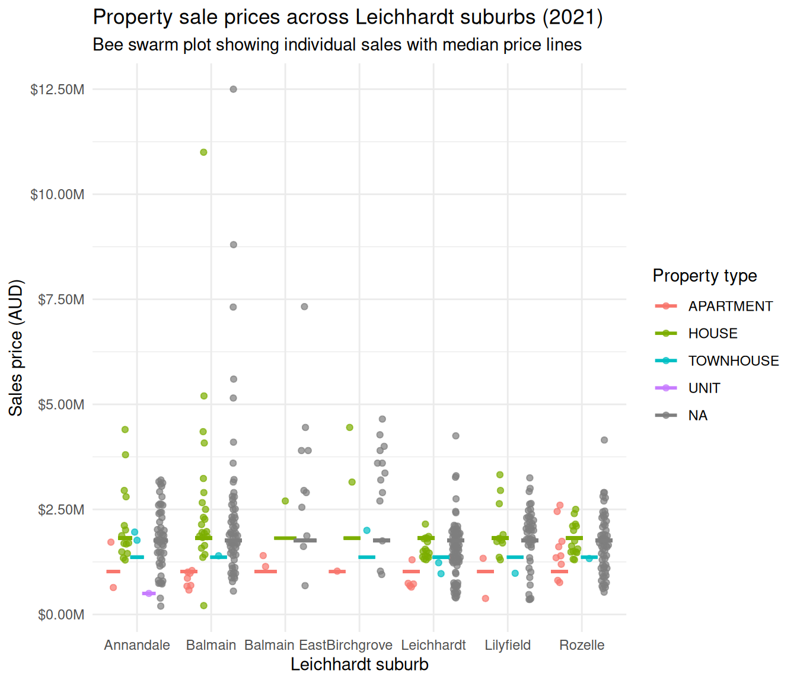

Median sale prices across Sydney Leichhardt suburbs in 2021
median_price_Leichhardt.RmdWe load necessary non-base R libraries.
Download 2021 past sales data for all Leichhardt suburbs. We use the
internal dataset divisions_NSW to create a
character vector of all suburbs within the SA3 Leichhardt
area.
# Get all Leichhardt suburbs
suburbs <- divisions_NSW |>
filter(sa3_name_2016 == "Leichhardt") |>
unite(suburb, division, state, sep = ", ") |>
pull(suburb)
suburbs
#> [1] "Annandale, NSW" "Balmain, NSW" "Balmain East, NSW"
#> [4] "Birchgrove, NSW" "Leichhardt, NSW" "Lilyfield, NSW"
#> [7] "Rozelle, NSW"
# Get data for Leichhardt suburbs
data <- suburbs |> map(get_past_sales_data, year = 2021L) |> bind_rows()
#> Warning in .f(.x[[i]], ...): No sales data for suburb 'Balmain East, NSW'We show the distribution and median value of sale prices of properties across different suburbs in the Sydney Leichhardt area in 2021.
# Plot
data |>
filter(!is.na(price), price > 1e3) |>
mutate(median_price = median(price), .by = property_type) |>
ggplot(aes(division, price, colour = property_type)) +
geom_quasirandom(dodge.width = 0.8) +
geom_errorbar(
aes(ymin = median_price, ymax = median_price),
position = position_dodge(width = 0.8)) +
scale_y_continuous(
labels = scales::label_dollar(scale = 1e-6, suffix = "M")) +
labs(x = "Leichhardt suburb", y = "Sales price") +
theme_minimal()